Fall Prevention · hero
Heel raises (with chair)
No balance work until a chair is beside you. Posture check, five counted heel raises, a held rise onto your toes, and an automatic sway stop.
How-to videos on Fire TV that pause at each key moment and continue only when your pose, hand shape, rhythm or hold is right — using the phone or laptop you already own as the camera.
Demo film, 4:04 — TV shots recorded on the Vega Virtual Device; learner simulated where labelled; narration by a local synthetic voice.
For people doing prescribed home exercises, parents learning to sign, or anyone practising CPR, a video that can't see you means practising it wrong, or giving up.
people die from falls each year — the second leading cause of unintentional injury death worldwide.
WHO · Falls fact sheetof Americans surveyed did not complete all of their assigned at-home physical therapy exercises.
Ohio State Wexner survey · Medical Economicsof deaf children are born to hearing parents — who have to learn to sign.
Mitchell & Karchmer (2004)of out-of-hospital cardiac arrests happen in homes. Immediate CPR can double or triple survival.
American Heart AssociationNo new hardware: the TV you have, and a phone or laptop propped up as an external camera. Pose tracking runs in the phone's browser; only body points travel to the TV.
Five channels, built for the 10-foot screen with the Fire TV remote. Each profile keeps its progress.
Scan the QR code or type the 4-digit room code. The phone becomes the camera — frames stay on it.
At each key moment the video pauses and continues only when you've got it right — counting reps, timing holds, and giving one short, kind tip when you're stuck.
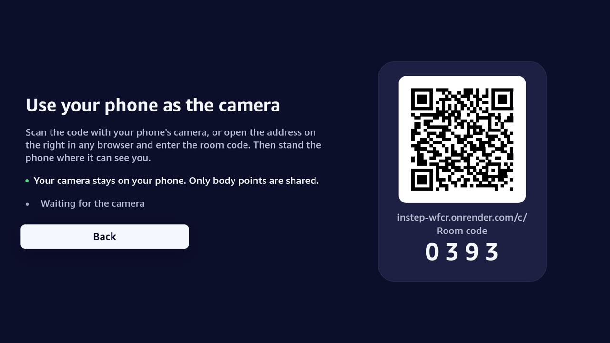
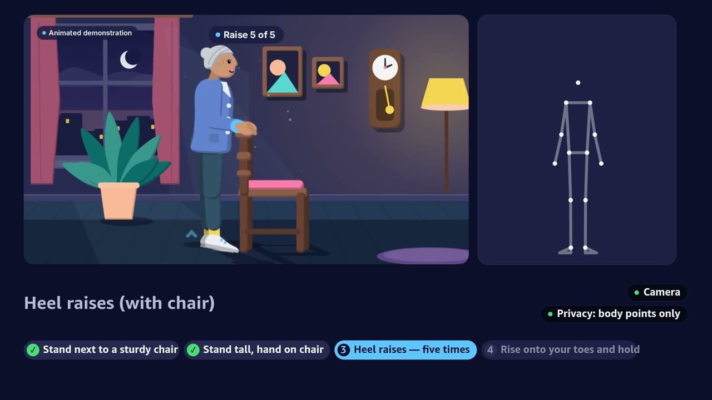
Every GIF below is a real screen recording of the TV app (played 3× faster) with a simulated learner passing each step. Each teacher video says on screen what it is.
No balance work until a chair is beside you. Posture check, five counted heel raises, a held rise onto your toes, and an automatic sway stop.
A five-second hold on each foot with a countdown ring, right then left.
Hand shapes checked finger by finger with Delta Glow — no sound needed — then spell a word.
Illustrated handshapes, not yet reviewed by Deaf signers. Learn with Deaf teachers and community too.
Thumb, index and little finger up — matched by finger curls.
Only full-range reps count, and the video slows to the learner's pace.
Use exercises prescribed or approved by your physiotherapist.
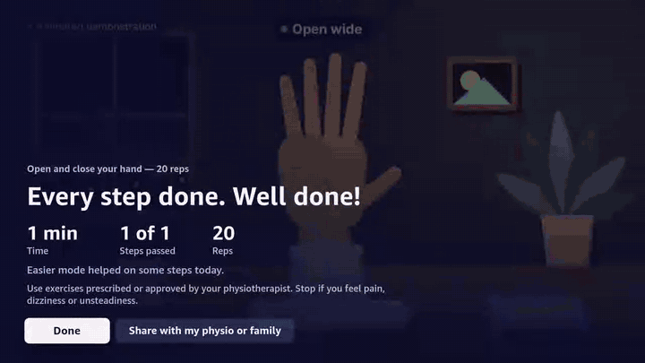
Compressions at 100–120 a minute with straight arms, following a metronome.
Practice aid for rhythm and straight arms only. It does not measure compression depth and is not certification. Take a certified CPR course.
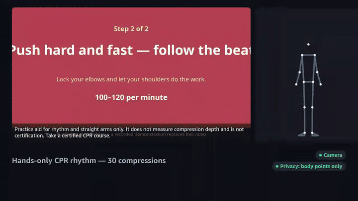
Act out a story to move it forward — tree, mouse, flamingo and wave, with a star burst after each.
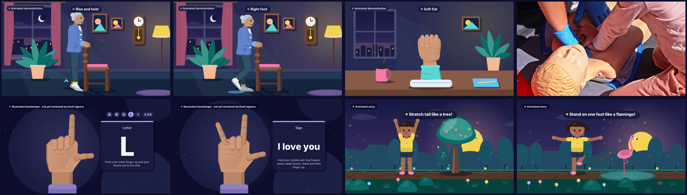
Flat illustrations drawn in code and timed to every gate, a real CPR clip (Pexels, credited), and a local synthetic voice that never talks over a pause. Together mode lets two people practise at once.
The companion is a web app — nothing to install. It runs MediaPipe in the browser, speaks tips, and lets a physiotherapist or teacher record a lesson once and publish it to every TV.
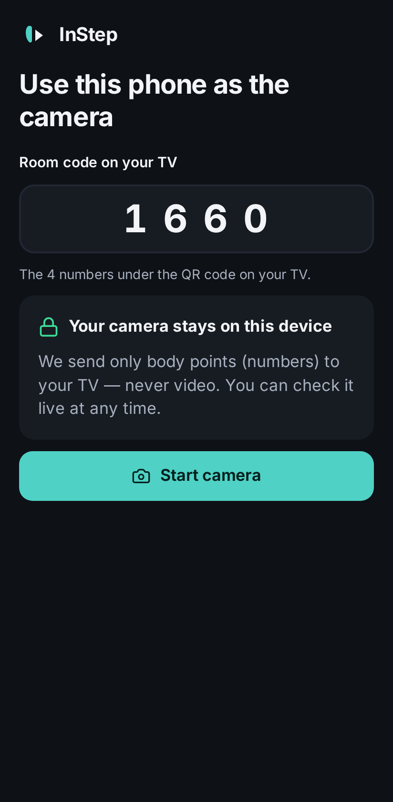
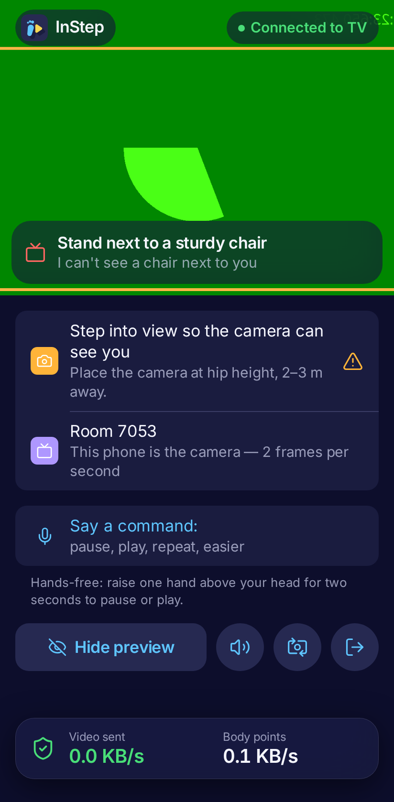
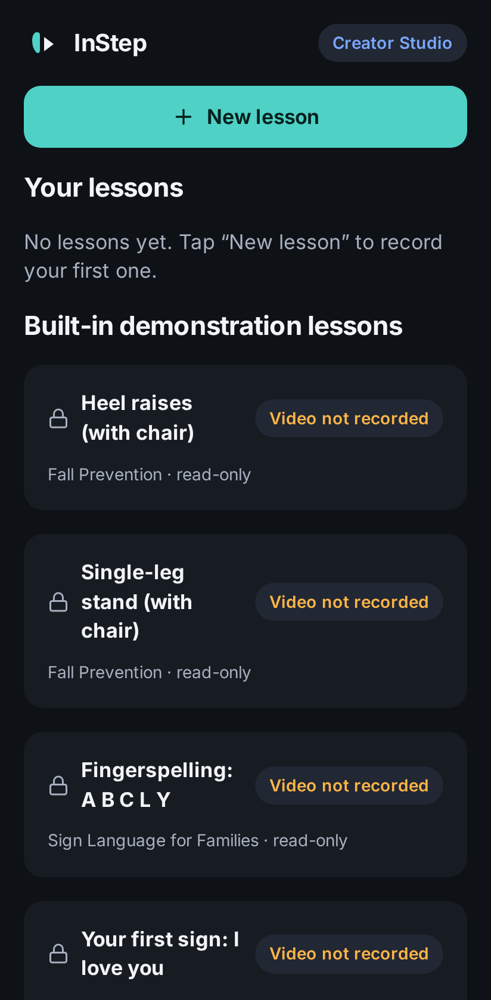
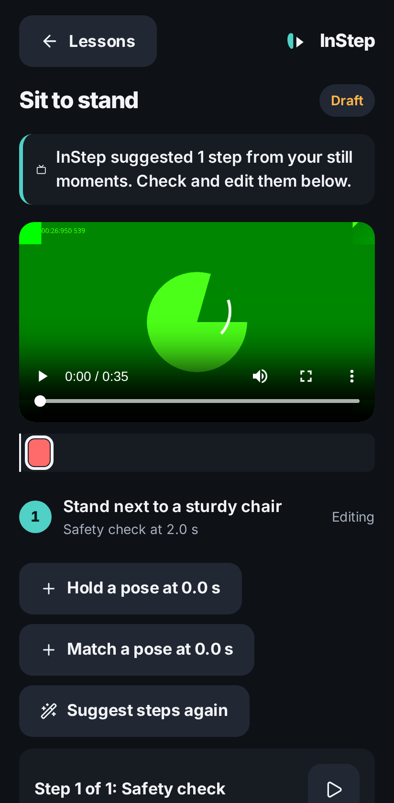
Measured on the phone, live, for every lesson.
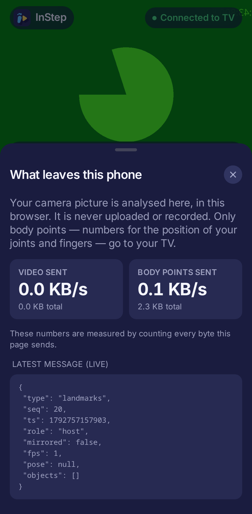
A pure TypeScript engine and an open lesson format, .istep, shared by every part of
the system. The TV pauses its W3C media player at each gate and resumes when the engine says you
passed.
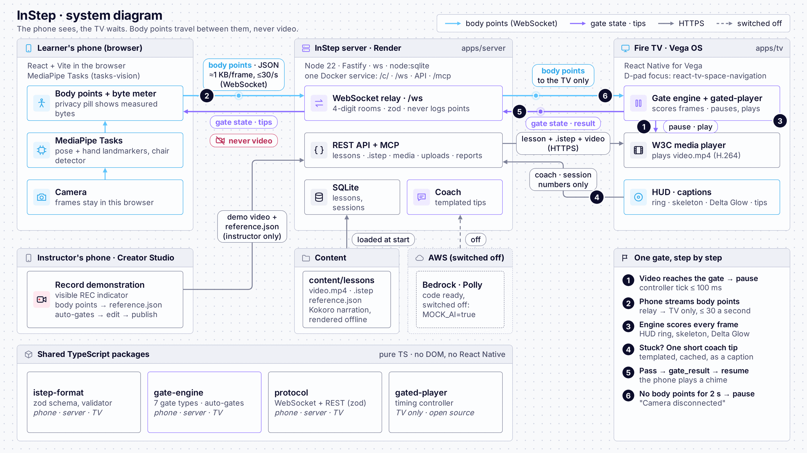
Like a WebVTT file for a video, but each cue is a gate: what must be true before the video continues. Seven gate types: pose, hold, reps, rhythm, hand shape, sequence and safety checks.
{ "id": "raises", "t": 22, "type": "rep_count", "label": "Heel raises — five times", "metric": { "kind": "heel_lift" }, "reps": 5, "rewindTo": 12, "then": "loop_segment" }
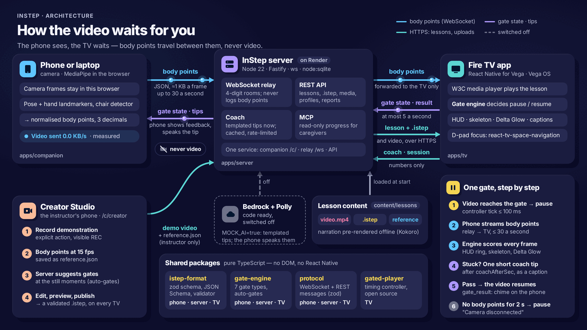
The camera is external. Your phone or laptop is the camera; the TV has no camera of its own.
A practice aid, not treatment. InStep has not been clinically tested and never diagnoses.
CPR is rhythm only. It does not measure compression depth and is not certification.
Sign language with Deaf teachers. The illustrated handshapes have not yet been reviewed by Deaf signers.
The coach is templated on the demo. Bedrock and Polly are integrated and tested, but switched off — no AWS credits are spent.
Every number is sourced. Statistics come only from the cited sources above.
Night-indigo for the living room, sky for the brand, sun for warmth — flat illustration without outlines.
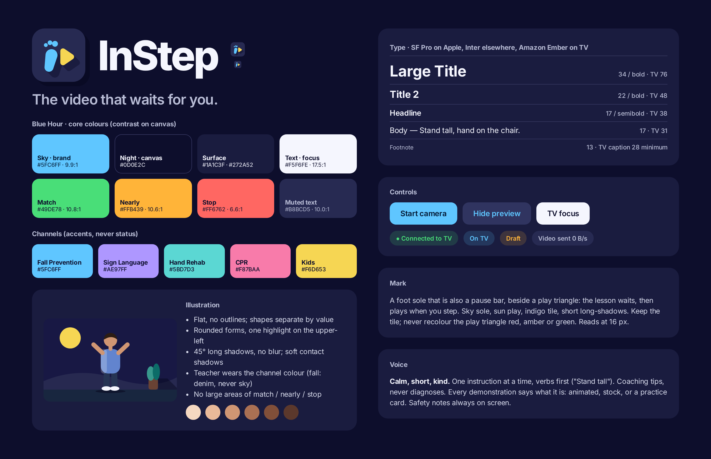